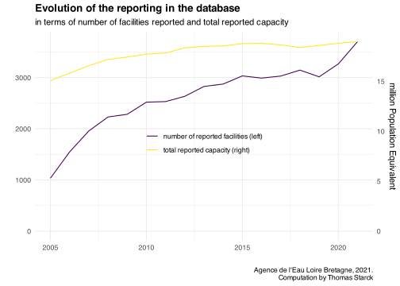
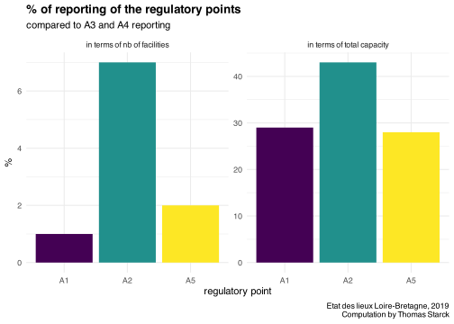

knitr::opts_chunk$set(warning=F, message=F, results=F, dev='svg')library(tidyverse) #loads multiple packages (see https://tidyverse.tidyverse.org/)#core tidyverse packages loaded:# ggplot2, for data visualisation. https://ggplot2.tidyverse.org/# dplyr, for data manipulation. https://dplyr.tidyverse.org/# tidyr, for data tidying. https://tidyr.tidyverse.org/# readr, for data import. https://readr.tidyverse.org/# purrr, for functional programming. https://purrr.tidyverse.org/# tibble, for tibbles, a modern re-imagining of data frames. https://tibble.tidyverse.org/# stringr, for strings. https://stringr.tidyverse.org/# forcats, for factors. https://forcats.tidyverse.org/# lubridate, for date/times. https://lubridate.tidyverse.org/#also loads the following packages (less frequently used):# Working with specific types of vectors:# hms, for times. https://hms.tidyverse.org/# Importing other types of data:# feather, for sharing with Python and other languages. https://github.com/wesm/feather# haven, for SPSS, SAS and Stata files. https://haven.tidyverse.org/# httr, for web apis. https://httr.r-lib.org/# jsonlite for JSON. https://arxiv.org/abs/1403.2805# readxl, for .xls and .xlsx files. https://readxl.tidyverse.org/# rvest, for web scraping. https://rvest.tidyverse.org/# xml2, for XML. https://xml2.r-lib.org/# Modelling# modelr, for modelling within a pipeline. https://modelr.tidyverse.org/# broom, for turning models into tidy data. https://broom.tidymodels.org/# Use the conflicted package (<http://conflicted.r-lib.org/>) to force all conflicts to become errors#loading additional relevant packageslibrary(cowplot) #for plot_grid() (multiple plots)library(viridis) #for viridis colorslibrary(readxl) # to read excel file#path for data path_source <-"source_data/04_loire_bretagne/provided_by_mail/"#setting graphs themetheme_set(theme_minimal() +theme(plot.title =element_text(face="bold") ) )#setting viridis theme for colorsscale_colour_continuous <- scale_colour_viridis_cscale_colour_discrete <- scale_colour_viridis_dscale_colour_binned <- scale_colour_viridis_b#setting viridis theme for fillscale_fill_continuous <- scale_fill_viridis_cscale_fill_discrete <- scale_fill_viridis_dscale_fill_binned <- scale_fill_viridis_b#reference year when graph analyse needs a particular yearYear_analysis <-2020#caption for all graphsSource <-"Agence de l'Eau Loire Bretagne, 2021.\nComputation by Thomas Starck"# Load the function filesource("functions.R")
We could not find data related to waste water treatment plants nutrient loads on Loire-Bretagne water agency website. Only are available the waste water treatment plants list and their capacity here and industrial discharges there.
The data presented here were provided by email.
For the Year 2019, we also got the data from the Etat des Lieux (status report) here, which is an expert assessment made by the water agency.
Two main files were transmitted :
One excel file describing each facility : facility name and code, city and department code, treatment type, plant capacity (in Population Equivalent, DBO5, and water flow), coordinates of the facility and of the discharge.
One excel file reporting for each wastewater treatment plant inflow and outflow DBO5, DCO, MES, NK, NGL, NO2, NO3, PO4 and P as well as water flow, from 2002 to 2020. Inflow and outflow are coded under the point names A3 and A4. More details on these points can be found here.
We will focus on the second file, which is the more adequate for our purpose. The first file will also be used to add the capacity and the treatment type for each plant.
Information about the basin ca be found in the “Etat des lieux 2019” (status report).
There are 13 million inhabitants in the basin. Data are measured in 3700 stations, representing 95% of the pollution flows. There are about 7000 wastewater treatment plants. In the 2013 report, it is said that about 1/4 of the people are not connected to sewers and use Individual Autonomous Systems.
More description in the “Guide de l’eau” (water guide) here and here
We load the data and prepare the file. For the nutrient flows which reporte null or negative values, we replace them with empty values.
Code
file_loire_bretagne <-read_excel(paste0( path_source, "STEU_E_S.xlsx" ), range ="A3:Z46177")#selecting and renaming dataN_P_loire_bretagne <- file_loire_bretagne %>%select(code_WWTP = ID, name_WWTP = NAME, Year, NGL_in_reported = NGL_in, NTK_in=NK_in, NH4_in = N_NH4_in, NO2_in = N_NO2_in, NO3_in = N_NO3_in, PO4_in = P_PO4_in, Pt_in = P_total_in, DBO5_in, DCO_in, MES_in,NGL_out_reported = NGL_out, NTK_out=NK_out, NH4_out = N_NH4_out, NO2_out = N_NO2_out, NO3_out = N_NO3_out, PO4_out = P_PO4_out, Pt_out = P_total_out, DBO5_out, DCO_out, MES_out ) #uncomment to see data of 2021 without yearly average and with many more indicators (micropolluants...)# temp <- read_csv2(file = paste(path_source, "J_2021.csv", sep=""))#data for capacity and treatment type, to be merged with main filefile_WWTP <-read_excel(paste(path_source, "steu collectivit‚ descriptif.xlsx", sep=""))WWTP <- file_WWTP %>%select(code_WWTP =`Code SANDRE`,INSEE_COM =`Code INSEE commune`, #in the end we will have to merge this 3 letter code to the DEP code to have the full onename_commune =`Libellé commune`,INSEE_DEP =`Code INSEE département`,treatment =`Nom file eau`,capacity =`Capacité EH`,capacity_DBO5 =`Capacité DBO5`,capacity_water =`Capacité HYDRO`,long_WWTP =`Y steu`,lat_WWTP =`X steu`,long_discharge =`X Rejet`,lat_discharge =`Y Rejet`#also of interest but not selected = coordinates of WWTP and discharge )# Number of WWTP with unreported...nrow(WWTP %>%filter(is.na(capacity)==T)) #capacity : 40nrow(WWTP %>%filter(is.na(treatment)==T)) #treatment : 19nrow(WWTP %>%filter(is.na(capacity_DBO5)==T)) #capacity DBO5 = 37nrow(WWTP %>%filter(is.na(capacity_water)==T)) #capacity water flow = 75nrow(WWTP %>%filter(is.na(code_WWTP)==T)) #code SANDRE : 0#joining the 2 files to have treatment type, capacity, and pollution flows togetherN_P_loire_bretagne <-left_join(N_P_loire_bretagne, WWTP, by="code_WWTP")# Some reported flows are negative or null. We replace them with empty values.#PtN_P_loire_bretagne$Pt_in[N_P_loire_bretagne$Pt_in <=0] <-NAN_P_loire_bretagne$Pt_out[N_P_loire_bretagne$Pt_out <=0] <-NA#PO4N_P_loire_bretagne$PO4_in[N_P_loire_bretagne$PO4_in <=0] <-NAN_P_loire_bretagne$PO4_out[N_P_loire_bretagne$PO4_out <=0] <-NA#DBO5N_P_loire_bretagne$DBO5_in[N_P_loire_bretagne$DBO5_in <=0] <-NAN_P_loire_bretagne$DBO5_out[N_P_loire_bretagne$DBO5_out <=0] <-NA#DCON_P_loire_bretagne$DCO_in[N_P_loire_bretagne$DCO_in <=0] <-NAN_P_loire_bretagne$DCO_out[N_P_loire_bretagne$DCO_out <=0] <-NA#MESN_P_loire_bretagne$MES_in[N_P_loire_bretagne$MES_in <=0] <-NAN_P_loire_bretagne$MES_out[N_P_loire_bretagne$MES_out <=0] <-NA#NTKN_P_loire_bretagne$NTK_in[N_P_loire_bretagne$NTK_in <=0] <-NAN_P_loire_bretagne$NTK_out[N_P_loire_bretagne$NTK_out <=0] <-NA#NO3N_P_loire_bretagne$NO3_in[N_P_loire_bretagne$NO3_in <=0] <-NAN_P_loire_bretagne$NO3_out[N_P_loire_bretagne$NO3_out <=0] <-NA#NO2N_P_loire_bretagne$NO2_in[N_P_loire_bretagne$NO2_in <=0] <-NAN_P_loire_bretagne$NO2_out[N_P_loire_bretagne$NO2_out <=0] <-NA#NH4N_P_loire_bretagne$NH4_in[N_P_loire_bretagne$NH4_in <=0] <-NAN_P_loire_bretagne$NH4_out[N_P_loire_bretagne$NH4_out <=0] <-NA
Some WWTP have unreported capacities. For the most recent of them we are able to get their capacity from the sanitation portal data.
Code
#get the list of WWTP with unreported capacitiesunreported_capacity <- N_P_loire_bretagne %>%filter(is.na(capacity))#get capacities from the sanitation portalsanitation_portal_capacity <-read_csv("output_data/all_WWTP/all_WWTP_sanitation_portal.csv") %>%select(code_WWTP, capacity) %>%distinct()#change value when possibleunreported_capacity <-left_join( unreported_capacity %>%rename(capacity_LB = capacity), sanitation_portal_capacity %>%select(code_WWTP, capacity), by="code_WWTP") %>%select(-capacity_LB)#we change the values in the main file.N_P_loire_bretagne <- N_P_loire_bretagne %>%filter(is.na(capacity)==F)N_P_loire_bretagne <-bind_rows( N_P_loire_bretagne, unreported_capacity)
In spite of this correction, we can see that before 2010 the number of stations not reporting their nominal capacity is not negligible (left). These are not only small stations, are shown by their relative phosphorus flows (right).
We compute the yields and ratios for each WWTP. We also compute NGL. For incoming NGL, when possible we use NTK, NO2 and NO3, but if only NTK is available we also keep it as a good approximation (NO is negligible for incoming pollution). For discharged NGL, NO3 and NTK must be reported, and we accept to neglect NO2 when it is unreported.
Code
#Creating new variables of interestN_P_loire_bretagne <- N_P_loire_bretagne %>%ungroup() %>%# we need to be "row wise" to use "sum(., na.rm=T) : # just summing the columns A+B would return NA when at least 1 columns as NA in the rowrowwise() %>%mutate(#for NGL in, if NTK_in reported we accept to not consider unreported NO2_in and NO2_in as 0 (because NO in negligible)#if NTK_in unreported, NGL_in is unreportedNGL_in =sum(NTK_in, NO2_in, NO3_in, na.rm=!is.na(NTK_in)), #For NGL_out, NO3 and NTK must be reported, and we accept to neglect NO2 when it is unreported.NGL_out =sum(NTK_out, NO2_out, NO3_out, na.rm=!((is.na(NTK_out)|is.na(NO3_out)))) )N_P_loire_bretagne <- N_P_loire_bretagne %>%mutate(NGL_yield = (1-NGL_out/NGL_in)*100,NGL_yield_reported = (1-NGL_out_reported/NGL_in_reported)*100,Pt_yield = (1-Pt_out/Pt_in)*100,DBO5_yield = (1-DBO5_out/DBO5_in)*100,DCO_yield = (1-DCO_out/DCO_in)*100,MES_yield = (1-MES_out/MES_in)*100,N_P_ratio_in = NGL_in/Pt_in, N_P_ratio_out = NGL_out/Pt_out,N_P_ratio_in_reported = NGL_in_reported/Pt_in, N_P_ratio_out_reported = NGL_out_reported/Pt_out ) %>%filter(Year >2004) #almost no data before 2005
We create the capacity categories in terms of population equivalent.
When looking at the dataset, there are some obvious outliers which have too big an inflow, which we remove. This gives the following graphs for each nutrient flow. We discuss further the potential outliers identified with this visual check. We can go further in outliers removal, as explained in the following tab.
Click to see first large outliers list
in 2020 LA COUR (code SANDRE 0422186S0001), which reports flows 2 to 3 orders of magnitude higher than the largest waste water treatment plants for all the inflows.
NGL, NTK, NH4 in 10^5,
NO2, NO3, Pt in 10^4,
DBO5 DCO MES in 10^6
NH4 inflow :
in 2014 in Lieu dit ‘le SIGNAN’ (code SANDRE 0456178S0001), incosistent, replace by 200
PO4 inflow :
in 2013 in FOLETIER (code SANDRE 0443137S0002), inconsistent, remove
in 2021 in PRES VOIE SNCF (code SANDRE 0423176S0002), 4 orders of magnitude higher
We change the biggest outliers to be able to vizualize the following graphs.
We recompute the values after the outliers modifications.
Code
N_P_loire_bretagne <- N_P_loire_bretagne %>%ungroup() %>%# we need to be "row wise" to use "sum(., na.rm=T) : # just summing the columns A+B would return NA when at least 1 columns as NA in the rowrowwise() %>%mutate(#for NGL in, if NTK_in reported we accept to not consider unreported NO2_in and NO2_in as 0 (because NO in negligible)#if NTK_in unreported, NGL_in is unreportedNGL_in =sum(NTK_in, NO2_in, NO3_in, na.rm=!is.na(NTK_in)), #For NGL_out, NO3 and NTK must be reported, and we accept to neglect NO2 when it is unreported.NGL_out =sum(NTK_out, NO2_out, NO3_out, na.rm=!((is.na(NTK_out)|is.na(NO3_out)))) )N_P_loire_bretagne <- N_P_loire_bretagne %>%mutate(#Computes yields Pt_yield = (1-Pt_out/Pt_in)*100, NGL_yield = (1-NGL_out/NGL_in)*100,DBO5_yield =(1-DBO5_out/DBO5_in)*100, DCO_yield =(1-DCO_out/DCO_in)*100,MES_yield =(1-MES_out/MES_in)*100,#nutrient ratiosN_P_ratio_in = NGL_in/Pt_in, N_P_ratio_out = NGL_out/Pt_out,DCO_DBO5_ratio_in = DCO_in/DBO5_in,DCO_DBO5_ratio_out = DCO_out/DBO5_out,DBO5_N_ratio_in = DBO5_in/NGL_in,DBO5_N_ratio_out = DBO5_out/NGL_out,DBO5_Pt_ratio_in = DBO5_in/Pt_in,DBO5_Pt_ratio_out = DBO5_out/Pt_out )
Even though there is not an obvious outlier at first glance, NGL presents a big inconsistency. When computing NK + NO3 + NO2, the total falls short of the reported NGL, especially for the inflow before 2010 (cf the tab “All N”).
Here we represent both reported and computed quantities. Out of consistency, for the following, we will use the computed quantity.
Code
ggplot(basin_N_P_loire_bretagne) +geom_line(aes(Year, NGL_in_reported, color="NGL in", linetype="reported")) +geom_line(aes(Year, NGL_in, color="NGL in", linetype="computed")) +geom_line(aes(Year, NGL_out_reported, color ="NGL out", linetype="reported")) +geom_line(aes(Year, NGL_out, color="NGL out", linetype="computed")) +ylim(0, NA) +labs(x="", y="ktN",title="Reported NGL flows in Loire-Bretagne basin Waste Water Treamtment plants",subtitle ="reported, not necessarily actual ; here before data cleaning",caption = Source )
Even though there are no obvious outliers, PO4 flows are not reliable, since they are barely reported. We address this issue later on in the “pollution flows” paragraph”.
NTK in - in 2008 and 2009 in ILE ARRAULT (code SANDRE 0445298S0001), 1 ODM
NH4 in - in 2016 in Communale (code SANDRE 0429259S0002), 3 order of magnitude higher - in 2020 in POCE SUR CISSE LA CROIX SAINT JEAN (code SANDRE 0437185S0002), 2 ODM
NO2 in - LES 3 RIVIEIRES 2020 (code SANDRE 0463113S0006), 2 ODM - probably others but tedious to do
NO3 in - (Beaurade 2003 outside period) - PORT NEUF 2006, 2 ODM, 0417300S0002 - Le corniguel 2006, 0429232S0004 2 ODM
Pt in - Avenue Ronsard 2014, 0441269S0009, inconsistent, NA - Kergloanou 2020, 0429150S0003, 2 ODM
NTK out - LA BAUMETTE 2007 and 2008 (code SANDRE 0449007S0002), 1 ODM
NH4 out - LES FORGES in 2014 (code SANDRE 0479017S0001), 3 OM - in 2005 in LA GACERIE (code SANDRE 0437010S0005), inconsistent, remove - probably others but tedious
NO2 out - grands champs et salles s mer in 2018 (code SANDRE 0417003S0003), 1 OM - probably others but tedious
NO3 out - KERZELLEC (code SANDRE 0429031S0004), in 2016, inconsistent : remove
We recompute the values after the outliers corrections.
Code
#recomputes NGL, yields and P/N ratioN_P_loire_bretagne <- N_P_loire_bretagne %>%ungroup() %>%# we need to be "row wise" to use "sum(., na.rm=T) : # just summing the columns A+B would return NA when at least 1 columns as NA in the rowrowwise() %>%mutate(#for NGL in, if NTK_in reported we accept to not consider unreported NO2_in and NO2_in as 0 (because NO in negligible)#if NTK_in unreported, NGL_in is unreportedNGL_in =sum(NTK_in, NO2_in, NO3_in, na.rm=!is.na(NTK_in)), #For NGL_out, NO3 and NTK must be reported, and we accept to neglect NO2 when it is unreported.NGL_out =sum(NTK_out, NO2_out, NO3_out, na.rm=!((is.na(NTK_out)|is.na(NO3_out)))) )N_P_loire_bretagne <-N_P_loire_bretagne %>%mutate(#Computes yields Pt_yield = (1-Pt_out/Pt_in)*100, NGL_yield = (1-NGL_out/NGL_in)*100,NGL_yield_reported = (1-NGL_out_reported/NGL_in_reported)*100,DBO5_yield =(1-DBO5_out/DBO5_in)*100, DCO_yield =(1-DCO_out/DCO_in)*100,MES_yield =(1-MES_out/MES_in)*100,#nutrient ratiosN_P_ratio_in = NGL_in/Pt_in, N_P_ratio_out = NGL_out/Pt_out,DCO_DBO5_ratio_in = DCO_in/DBO5_in,DCO_DBO5_ratio_out = DCO_out/DBO5_out,DBO5_N_ratio_in = DBO5_in/NGL_in,DBO5_N_ratio_out = DBO5_out/NGL_out,DBO5_Pt_ratio_in = DBO5_in/Pt_in,DBO5_Pt_ratio_out = DBO5_out/Pt_out )
In the basin presentation, we said that there are about 7 000 operating Waste Water Treatment Plants, In the graph below, the number of reported facilities is about 3 700 for the years 2015-2020 and 3 000 in 2000. We thus miss more than half of the facilities, mostly very small facilities.
However, even with the hypothesis that all of these unreported facilities have a capacity of 200 Population Equivalent, probably leading to an overestimation, this would result in a total unreported capacity of 0.9 M Population Equivalent. Compared to the total reported capacity of 18-19 M Population Equivalent in our data, this represents only 5% of unreported capacity.
Likewise, even though the number of listed plants in the data base increases from 1034 to 3703 (a 258% increase) between 2005 and 2020, the total capacity only increases by 26% from 15.1 to 19 million Population Equivalent.
This highlights the fact that unreported plants are mostly small and that the plant size distribution is highly skewed, which is discussed in the following 3 tabs.
Code
coef <-max(temp$capacity)/max(temp$nb_WWTP)ggplot(temp) +geom_line(aes( Year, nb_WWTP, color ="number of reported facilities (left)" ) ) +geom_line(aes( Year, capacity/coef, color ="total reported capacity (right)" ) ) +scale_y_continuous(limits =c(0, NA),sec.axis =sec_axis(trans=~.*coef, name="million Population Equivalent" ) ) +labs(title ="Evolution of the reporting in the database",subtitle ="in terms of number of facilities reported and total reported capacity",y="", x="", color="", caption = Source ) +theme(legend.position =c(0.5, 0.5) )

Code
temp <- N_P_loire_bretagne %>%filter(is.na(capacity)==F) %>%select(Year, capacity, PE_bin) %>%group_by(Year, PE_bin) %>%summarise(`capacity (million PE)`=sum(capacity)/10^6,`number of stations`=n() ) %>%gather(key=capacity_or_n, value = value, `capacity (million PE)`, `number of stations`)
Navigate through tabs below to see details for each pollutant. For each pollutant, we present reporting for incoming and outgoing pollution, in terms of number of WWTP reporting the data or in terms of installed capacity.
In terms of capacity and starting 2010, pollution reporting is very good for NTK, PT, DBO5, DCO and MES (>95%). The same is true for outgoing NH4, NO2 and NO3. Starting 2015, incoming NH4 reporting is quite good. Incoming NO2 and NO3 reporting are poorly reported, but since they represent a negligible share of incoming total N load, it is not a great concern. Its is more problematic for incoming NH4. PO4 is very poorly reported (~10% of capacity), so we will not analyse its flows.
Code
#function for plots : to be finishedf_graph_reporting_nutrients <-function(pollution_in, pollution_out){ temp <- N_P_loire_bretagne %>%select( Year, capacity, !!as.symbol(pollution_in), !!as.symbol(pollution_out) ) %>%mutate(nutrient_in =is.na(!!as.symbol(pollution_in))==F,nutrient_out =is.na(!!as.symbol(pollution_out))==F ) %>%gather(key=in_out_flow, value =`reported pollution`, nutrient_in, nutrient_out ) %>%group_by( Year, in_out_flow, `reported pollution` ) %>%summarise(`number of WWTP`=n(), `capacity (million PE)`=sum(capacity, na.rm=T)/10^6 ) %>%gather(key=n_or_capacity, value = value, `number of WWTP`, `capacity (million PE)` ) %>%#renaming labelsmutate(in_out_flow =case_when( in_out_flow =="nutrient_in"~ pollution_in, in_out_flow =="nutrient_out"~ pollution_out, ) ) g <-ggplot(temp) +geom_area(aes(Year, value, fill=`reported pollution`)) +facet_grid( n_or_capacity~in_out_flow, scales="free_y", switch ="y") +labs(y="", x="",title ="Reporting of nutrient inflows (left) and outflows (right)",subtitle ="In terms of total capacity (top) and nb of WWTP (bottom)",caption = Source ) return(g)}
#changing the graph function to change the subtitle (before data cleaning => after data cleaning)f_graph_nutrient <-function(dataset, nutrient_in, nutrient_out, label, legend_x, legend_y){ p <-ggplot(dataset) +#nutrient inflowgeom_line(aes( Year, !!as.symbol(nutrient_in), color=nutrient_in ) ) +#nutrient outflowgeom_line(aes( Year,!!as.symbol(nutrient_out), color = nutrient_out ) ) +ylim(0, NA) +theme(legend.position =c(legend_x, legend_y), legend.title =element_blank() ) +labs(x="", y=paste("kt of", label) , title =paste("Reported", label, "flows in Loire-Bretagne WWTPs") ,subtitle ="reported, not necessarily actual ; here after data cleaning", caption = Source ) return(p)}
We extrapolate the flows at the basin scale for the plants not reporting them. For that, we use a coefficient proportionate to the unreported capacity of the given nutrient flow (see data quality tab).
We compute in terms of installed capacity the reported and unreported flows for NGL, Pt, DBO5, DCO and MES. We do this for each year and for each capacity category.
Code
#create file of reported temp <- N_P_loire_bretagne %>%select( Year, PE_bin, capacity, Pt_in, Pt_out, NGL_in, NGL_out, DBO5_in, DBO5_out, DCO_in, DCO_out, MES_in, MES_out ) %>%#spots unreported values for each nutrient flowmutate(across(c(Pt_in, Pt_out, NGL_in, NGL_out, DBO5_in, DBO5_out, DCO_in, DCO_out, MES_in, MES_out),~is.na(.x)==F ) ) %>%#gather to ba able to then group by flow and count capacitygather(key=nutrient_flow, value = reported_pollution, Pt_in, Pt_out, NGL_in, NGL_out, DBO5_in, DBO5_out, DCO_in, DCO_out, MES_in, MES_out ) %>%#count reported capacity and unreported capacity for each (Year, capacity category, nutrient flow)group_by( Year, PE_bin, nutrient_flow, reported_pollution ) %>%summarise(capacity =sum(capacity, na.rm=T)/10^6 ) %>%#creates reported/unreported names for each nutrient flow and spreads into columnsmutate(nutrient_flow =case_when( reported_pollution == T ~paste0(nutrient_flow, "_reported"), reported_pollution == F ~paste0(nutrient_flow, "_unreported") ) ) %>%select(-reported_pollution) %>%spread(nutrient_flow, capacity)# NA values replaced by 0 for future coeff computationtemp[is.na(temp)] <-0
From this we compute proportionate coefficient to extrapolate real flows. We are not able to do this for the stations that do not report their nominal capacity.
We add these adjusted flows to the main files reporting flows at the basin scale
Code
#adding adjusted flows to the basin x capacity filesbasin_PE_N_P_loire_bretagne <-left_join( basin_PE_N_P_loire_bretagne, temp2, by=c("Year", "PE_bin"))#aggregating adjusted flows at the basin scale without the capacity categoriestemp <- temp2 %>%select(-PE_bin) %>%group_by(Year) %>%summarise_all(~signif(sum(.x), 3))#adding adjusted flows to the basin filesbasin_N_P_loire_bretagne <-left_join( basin_N_P_loire_bretagne, temp, by="Year")
We plot the comparison reported / adjusted in the following graphs.
We load the “Etat des lieux 2019” file, downloaded from this page. The data reported in this expert assessment allosw us to:
check if we obtain the same results with our method
get some data about sewers losses and overflows (points A1, A2 and A5), reported in the Etat des lieux but not in the data we used
Code
path_source <-"source_data/04_loire_bretagne/etat_des_lieux/"Source <-"Etat des lieux Loire-Bretagne, 2019\nComputation by Thomas Starck"etat_des_lieux <-read_excel(paste0( path_source, "Matrice_des_rejets_EDL2019.xlsx" ),sheet="données" )N_P_etat_des_lieux <- etat_des_lieux %>%select(collectivity_industry =`collectivité ou industrie`,code_WWTP =`Code SANDRE STEU ou usine`,INSEE_DEP = Département,INSEE_COM =`Code INSEE commune`,name_commune =`Nom commune`,name_WWTP =`Nom ouvrage ou raison sociale`,point_SANDRE =`Code SANDRE type point de rejet coll`,capacity =`Capacité STEU EH`,lat_discharge =`Coordonnée x rejet`,long_discharge =`Coordonnée y rejet`,network_type =`Type réseau retenu coll`,flow_in =`Volume entrée STEU m3/j`,flow_out =`Volume sortie STEU ou point de rejet direct m3/j`,DBO5_in =`DBO5 entrée STEU kg/j`,DBO5_out =`DBO5 sortie STEU ou point de rejet direct ou indus kg/j`,DCO_in =`DCO entrée STEU kg/j`,DCO_out =`DCO sortie STEU ou point de rejet direct ou indus kg/j`,NGL_in =`NGL entrée STEU kg/j`,NGL_out =`NGL sortie STEU ou point de rejet direct ou indus kg/j`,Pt_in =`Pt entrée STEU kg/j`,Pt_out =`Pt sortie STEU ou point de rejet direct ou indus kg/j` ) %>%filter( collectivity_industry =="C" )
We select the different regulatory points in the file (A1, A2, A3, A4 and A5). Discharge without treatment corresponds to A1, A2 and A3 points. Caution : for A1 point there can be several discharge points for 1 unique station.
A1, A2 and A5 points are reported for 1, 7 and 2% of the nearly 8000 WWTP of the basin. Yet this represent 30, 45 and 40% of the total installed capacity (same for incoming NGL and Pt flows).
Code
f_discharge_points <-function(dataset){ A3 <- dataset %>%filter(point_SANDRE =="A4") A4 <- dataset %>%filter(point_SANDRE =="A4") A2 <- dataset %>%filter(point_SANDRE =="A2") A1 <- dataset %>%filter(point_SANDRE =="A1") A5 <- dataset %>%filter(point_SANDRE =="A5") discharge_points <-data.frame(point =c("A1", "A2", "A5", "A3", "A4"), n_WWTP =c(#A1nrow(A1 %>%select(code_WWTP) %>%distinct()),#A2nrow(A2),#A5nrow(A5),#A3nrow(A3),#A4nrow(A3) ),capacity =c(#A1round(sum(A1 %>%select(code_WWTP, capacity) %>%distinct() %>%pull(capacity))/10^6, 1),#A2round(sum(A2$capacity)/10^6, 1),#A5round(sum(A5$capacity)/10^6, 1),#A3round(sum(A3$capacity)/10^6, 1),#A4round(sum(A4$capacity)/10^6, 1) ),Pt_in =c(#A1round(sum(A1 %>%select(code_WWTP, Pt_in) %>%distinct() %>%pull(Pt_in))*(365/10^6), 3),#A2round(sum(A2$Pt_in)*(365/10^6), 3),#A5round(sum(A5$Pt_in)*(365/10^6), 3),#A3round(sum(A3$Pt_in)*(365/10^6), 3),#A4round(sum(A4$Pt_in)*(365/10^6), 3) ),Pt_out =c(#A1round(sum(A1$Pt_out)*(365/10^6), 3),#A2round(sum(A2$Pt_out)*(365/10^6), 3),#A5round(sum(A5$Pt_out)*(365/10^6), 3),#A3round(sum(A3$Pt_out)*(365/10^6), 3),#A4round(sum(A4$Pt_out)*(365/10^6), 3) ),NGL_in =c(#A1round(sum(A1 %>%select(code_WWTP, NGL_in) %>%distinct() %>%pull(NGL_in))*(365/10^6), 3),#A2round(sum(A2$NGL_in)*(365/10^6), 3),#A5round(sum(A5$NGL_in)*(365/10^6), 3),#A3round(sum(A3$NGL_in)*(365/10^6), 3),#A4round(sum(A4$NGL_in)*(365/10^6), 3) ),NGL_out =c(#A1round(sum(A1$NGL_out)*(365/10^6), 3),#A2round(sum(A2$NGL_out)*(365/10^6), 3),#A5round(sum(A5$NGL_out)*(365/10^6), 3),#A3round(sum(A3$NGL_out)*(365/10^6), 3),#A4round(sum(A4$NGL_out)*(365/10^6), 3) ) )return(discharge_points)}f_discharge_points_A <-function(dataset, point_select){#keep only point of interest point_A <- dataset %>%filter(point_SANDRE == point_select)#keep the A3-A4 points associated with the stations concerned by our point of interes list_WWTP <-unique(point_A$code_WWTP) discharge_points_A <- dataset %>%filter(code_WWTP %in% list_WWTP)#apply aggregating function discharge_points_A <-f_discharge_points(discharge_points_A) %>%filter(point %in%c(point_select, "A3", "A4"))return(discharge_points_A)}temp <- N_P_etat_des_lieux %>%select( code_WWTP, name_WWTP, capacity, point_SANDRE, NGL_in, NGL_out, Pt_in, Pt_out ) #here still doule reporting in the different points to check consistency (ie A3 and A4, or incoming points). We remove them afterdischarge_points_all <-f_discharge_points(temp)discharge_points_A5 <-f_discharge_points_A(temp, "A5")discharge_points_A1 <-f_discharge_points_A(temp, "A1")discharge_points_A2 <-f_discharge_points_A(temp, "A2")#removing double reportingf_rm_A3_A4 <-function(dataset){ dataset$Pt_in[dataset$point %in%c("A1", "A2", "A5", "A4")] <-NA dataset$NGL_in[dataset$point %in%c("A1", "A2", "A5", "A4")] <-NA dataset$Pt_out[dataset$point=="A3"] <-NA dataset$NGL_out[dataset$point=="A3"] <-NAreturn(dataset)}discharge_points_A5 <-f_rm_A3_A4(discharge_points_A5)discharge_points_A1 <-f_rm_A3_A4(discharge_points_A1)discharge_points_A2 <-f_rm_A3_A4(discharge_points_A2)#discharge_points_all <- f_rm_A3_A4(discharge_points_all)#pas sûr de faire ça pour le dernier
#see reporting in terms of capacity, nb of WWTP, NGL and Pt flowstemp <- discharge_points_all %>%select(point, n_WWTP, capacity, Pt_in, NGL_in) %>%gather(n_or_capacity, value, n_WWTP, capacity, Pt_in, NGL_in)ggplot(temp) +geom_col(aes(point, value, fill=point)) +facet_wrap(vars(n_or_capacity), scales="free_y") +theme(legend.position ="none") +labs(x="regulatory point", y="",title ="Reporting of the different point",subtitle ="capacity, NGL and PT are virtually the same",caption=Source )
Code
temp <- discharge_points_all %>%select(point, n_WWTP, capacity) %>%gather(n_or_capacity, value, n_WWTP, capacity) %>%spread(point, value) %>%select(-A4) %>%mutate(across(c(A1, A2, A5, A3), ~round(.x/A3*100, 0) ) ) %>%select(-A3) %>%gather(point, value, A1, A2, A5) %>%mutate(n_or_capacity =case_when( n_or_capacity=="capacity"~"in terms of total capacity", n_or_capacity=="n_WWTP"~"in terms of nb of facilities" ) )ggplot(temp) +geom_col(aes(point, value, fill=point)) +facet_wrap(vars(n_or_capacity), scales="free_y") +theme(legend.position ="none") +labs(x="regulatory point", y="%",title ="% of reporting of the regulatory points",subtitle ="compared to A3 and A4 reporting",caption=Source )

Discharged pollution without treatment (A1, A2 and A5 points) represent 15% (9%, 4% and 2%) of to A3 incoming flow. This is true for both NGL and Pt.
When compared to discharged flows A4, the figure is 130% (80%, 30%, 20%). This more than doubles the amount of pollution discharged to waters.
There is more than twice as much WWTP reported in the Etat des lieux compared compared to our data. But this changes the total capacity and incoming flows by only a few percent. However the difference is more important for discharged flows, probably because small WWTP have lower removal efficiencies.
Code
A3_A4 <- N_P_etat_des_lieux %>%filter(point_SANDRE=="A4")#create capacity categoriesA3_A4 <- A3_A4 %>%mutate(PE_bin =case_when( capacity <200~"0 - 200 PE", (capacity >=200) & (capacity <2000) ~"200 - 2 000 PE", (capacity >=2000) & (capacity <10000) ~"2 000 - 10 000 PE", (capacity >=10000) & (capacity <100000) ~"10 000 - 100 000 PE", capacity >=100000~"> 100 000 PE", T ~"unreported PE" ) )#reorders treatment by their share of total capacityA3_A4$PE_bin <-factor( A3_A4$PE_bin, levels =c("unreported PE","0 - 200 PE", "200 - 2 000 PE", "2 000 - 10 000 PE","10 000 - 100 000 PE", "> 100 000 PE" ) )basin_A3_A4 <- A3_A4 %>%mutate(Year =2019) %>%group_by(Year) %>%summarise(across(# Flows in and out flows converted in kt/y (from kg/day) at the whole basin scalec( NGL_in, Pt_in, NGL_out, Pt_out, DBO5_in, DBO5_out, DCO_in, DCO_out ), ~sum(.x, na.rm = T)*365/10^6 ),capacity=sum(capacity)/10^6,nb_WWTP=n() )f_graph_comparison <-function(variable_select){ g <-ggplot(basin_N_P_loire_bretagne) +geom_col(data = basin_A3_A4, aes(Year, !!as.symbol(variable_select), fill ="état des lieux"), alpha=.8) +geom_line(aes(Year, !!as.symbol(variable_select), color ="our data")) +labs(x="", y="kt per year",title ="Comparison with the Etat des lieux data",caption = Source,fill="", color="" )return(g)}